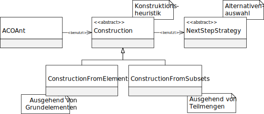

类 AbstractConstruction<E extends AbstractNextStepStrategy,P extends AbstractProblem,S extends AbstractSolution>
java.lang.Object
eu.andredick.aco.construction.AbstractConstruction<E,P,S>
- 类型参数:
E- 设计中使用的候选集选择策略.
public abstract class AbstractConstruction<E extends AbstractNextStepStrategy,P extends AbstractProblem,S extends AbstractSolution>
extends Object
抽象构造启发式。
启发式构造
此组件的特征由蚂蚁类
设计启发式和解的选择在逻辑上是相互依赖的。
通常不是每个任意变体的候选项都可以与某种启发式构造一起使用。
因此，在派生此抽象类时，必须确定泛型候选集选择.
启发式构造
此组件的特征由蚂蚁类
ACOAnt 确定，用于构建新的解。设计启发式和解的选择在逻辑上是相互依赖的。
通常不是每个任意变体的候选项都可以与某种启发式构造一起使用。
因此，在派生此抽象类时，必须确定泛型候选集选择.

-
字段概要
字段 -
构造器概要
构造器 -
方法概要
-
字段详细资料
-
nextStepRule
选择在设计中使用的备选方案的规则.
-
-
构造器详细资料
-
AbstractConstruction
构造函数- 参数:
nextStepRule- 选择在设计中使用的备选方案的规则
-
-
方法详细资料
-
construct
该方法启动设计过程，并在运行后为提交的问题提供完整的解决方案.
该方法在 ACOAnt 类中调用.- 参数:
problem- 由蚂蚁构建解决方案的抽象问题.- 返回:
- 完整设计的解决方案
-